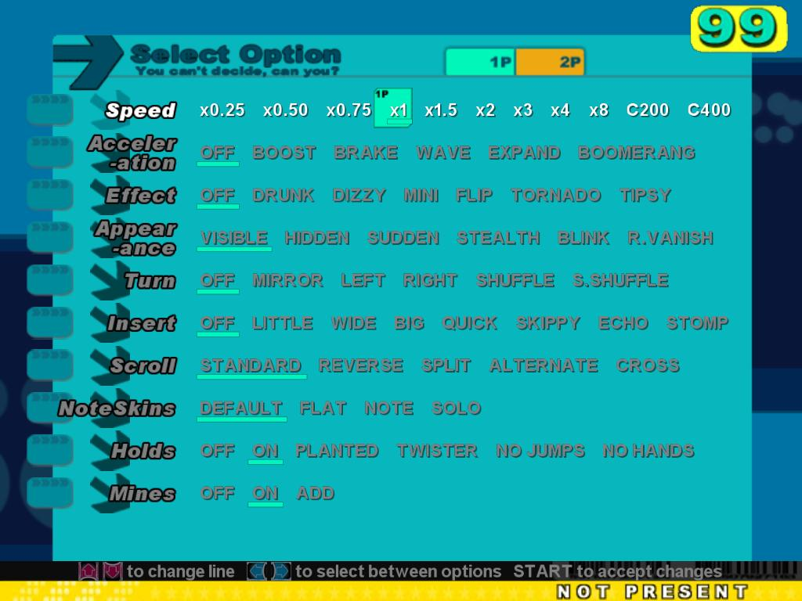
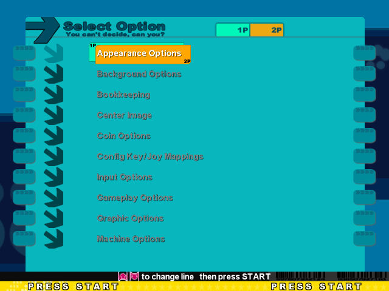

StepMania is a music/rhythm game. The player presses different buttons in time to the music and to note patterns that scroll across the screen. Features 3D graphics, visualizations, support for gamepads/dance pads, a step recording mode, and more!
StepMania is capable of playing many game types. Currently, it supports games similar to Dance Dance Revolution, Pump It Up, EZ 2 Dancer, and Para Para Paradise. In the future, it will support games similar to BeatMania, Guitar Freaks, DrumMania, and more.
The games played by StepMania are rhythm games. Notes scroll up from the bottom of the screen, and the player must hit the corresponding button on the controller in time to the. All games can be played using the keyboard, but the real fun comes when using specially designed controllers, like a dance pad or hand sensors.
2. System Requirements
- CPU: Intel compatable (500mhz or higher reccomended)
- Graphics: DirectX 7 and OpenGL compatable graphics adapter with 16MB or more of graphics memory
- Hard Disk: 10MB free for base program, additional space as needed for songs/themes/etc.
- Sound: DirectX 7 compatable (ALSA/OSS compatable for linux) sound card.
- For Linux:
- madlibs/libmad 0.15.1b or greater (for MP3 support)
- libvorbis (for ogg/vorbis support)
- A compatable XF86/Xorg display server
- ALSA
3. Installation
3a. Installing StepMania
To install StepMania on Windows 98/ME/2000/XP:
- Point your web browser to the StepMania Sourceforge.net project files page at http://sourceforge.net/project/showfiles.php?group_id=37892
- Download the file stepmania-X.Y-Z.exe where X, Y, and Z are version numbers, and save it to your hard drive.
- Double click Stepmania-X.Y-Z.exe, and follow the instructions on screen.
- After installation, add songs, themes, noteskins, etc to their appropriate directories (see section 5)
- To run StepMania, click the Start button, select Programs or All Programs, select StepMania (or Stepmania CVS) and click Play Stepmania.
To install on Linux/Unix using the binaries:
- Point your web browser to the StepMania Sourceforge.net project files page at http://sourceforge.net/project/showfiles.php?group_id=37892
- Download stepmania-X.Y-Z-linux.tar.gz (where X.Y-Z are version numbers) to a folder on your hard drive.
- Extract the archive using tar -zxvf stepmania-X.Y-Z-linux.tar.gz
- Add songs/themes/noteskins/etc. to the appropriate folders (see Section 5)
- To Start StepMania, run ./stepmania from the installation folder.
To compile/install StepMania from a source tarball:
- Point your web browser to the StepMania Sourceforge.net project files page at http://sourceforge.net/project/showfiles.php?group_id=37892
- Download stepmania-X.Y-Z-linux-src.tar.gz to a location in your hard drive
- Extract the archive using tar -zxvf stepmania-X.Y-Z-linux-src.tar.gz
- In the extracted folder, type ./configure
- Finally, type make (or gmake) to build StepMania
To install StepMania on Mac OSX:
TODO
3b. Adding songs, themes, characters, etc
To add songs to StepMania:
- Open your StepMania installation directory, and the folder called "Songs"
- Create subdirectories for each song group (game the songs came from, step artist, etc). These will appear as groups on the song wheel.
- Create folders for each song you want in the group.
- Place inside the folder:
- the DWI or SM step file
- the song's music file
- a background (optional)
- a banner (optional
.
Themes, BG Animations, Characters, Note skins, and announcers should be placed in subdirectories of their respective folders.
For Example, the files for the Foo announcer would reside in Announcers/Foo/
Alternatively, some StepMania addons come in .SMZIP format. This special archive contains all the files for an addon. Simply double-click it to install the files in the right places.
4. Using StepMania
Once you start Stepmania, you will be presented with the Stepmania Title Screen

Hit the Start or Back buttons (Enter or Esc by default) to go to the main menu. (Note that in Freeplay or Pay mode, the main menu is disabled)

4a. Starting the Game
From the Main Menu, select Game Start. After the warning screen appears, you will be presented with the Select Style screen.

Select one of the five styles to continue:
- Single: Standard 4 pannel mode for one player
- Versus: Standard 4 pannel mode for two players
- Couple: 4 pannel mode for two players with different steps for each player
- Double: One player plays on both pads simultaneously
- Solo: 6 pannel mode for one player
Once you select a style, you are presented with the Select Difficulty screen.

Select a difficulty to continue, or scroll right past Heavy to show the Challenge/Oni screen.

These modes are more difficult than the standard game modes.
Once you select a difficulty, you are presented with the song wheel.

Select a song with the Menu Left and Menu right keys (see Section 4c to define them)
Once you select a song, you are presented a variety of information about this song.
- This is the currently selected song's banner.
- This is the speed (in Beats Per Minute) of the currently selected song.
- This is the Groove Radar. It shows how much Freeze, Chaos, Voltage, Air, and Stream a song has.
- This is the feet rating. It shows how difficult overall a song is.
- This is the song wheel. Rotate it to select a song with Menu Left and Menu Right, or Pad left and Pad right (see section 4c)
- This shows how the songs on the song wheel are sorted. To change the sort press Up, down, up, and down on the pad or keyboard to display the list of choices for song sorting. Select one with Start.
- This shows the current stage number. "Event" is displayed in Event mode.
To Start a song, select it, and press start. Depending on your options, you may also press start within a second or two after that to enter the Song Options menu.
4b. Song options
The song options menu contains a variety of options to alter the way the game is played. These include

- Speed: This setting defines the speed that the notes move at, relative to the song's tempo.
- Acceleration: These settings can make the speed of the notes change as they progress up the screen, making the game more difficult.
- Effect: These settings enabled a variety of effects on the notes, such as a "drunk" effect, making the game harder.
- Appearance: These options also affect the appearance of the notes, however these deal with their visibility.
- Turn: These options enable a turn in the notes as the move up the screen.
- Insert: These options insert random notes into the orignal step pattern.
- Scroll: These settings affect the placement of the stationary arrows.
- NoteSkins: Changes the noteskin.
- Holds: Enables or disables hold notes in some songs
- Mines: Enables mines in some songs, which when hit like regular notes, greatly decrease the player's lifebar.
- Hide Chooses how to hide the notes.
- Persp: Changes the perspeftive of the notes.
- Steps: Chooses the step set or difficulty to use.
- Character: Chooses from one of the installed dancing characters.
- LifeType: Chooses from two different types of life bars: the standard lifebar, or a "Battery" which allows only a set number of misses until the player fails, controled by BatLives.
- BarDrain: Affects how the bar drains when the player misses a note or hits a mine.
- BatLives: Sets the number of lives in Battery mode.
- Fail: Sets the type of fail. Immediate fails when the lifebar reaches zero, end of song waits until the end of the song to fail the player, and off disables fail.
- Assist Tick: Enables a metronome-like tick.
- Rate: Chages the rate the song is played.
- Save Scores: Enables the saving of scores to the high score table.
Once you press Exit on the second screen, the game will start.
4c. Game Options
Select Options from the main menu to get to the Options menu.

Below are descriptions of available SM options.
- Apperance options
- Language: Sets StepMania's Language (english by default)
- Announcer: Sets the announcer from a list of currently installed announcer packs.
- Theme: Sets the theme from a list of currently installed themes.
- Note Skin: Chooses the Note Skin from a list of installed note skins.
- Instructions: Chooses wheter or not to show the Instructions screen explaining Hold notes.
- Caution: Chooses whether or not to show the Caution screen after Game Start is selected.
- Oni Score Display: chooses whether to display Oni mode Score in Dance points or Percent.
- Song Group: Chooses whether to present a list of song groups, or select the All Music group by default.
- Wheel Sections: This chooses whether to use Wheel sections (folders) in all song sort modes, ABC sort only, or never.
- Course Sort: This changes the way courses are sorted.
- Random At End: This chooses whether to put random courses at the end of the sort.
- Translations: This shows whether to romanize some song titles.
- Lyrics: This chooses whether to show song lyrics.
- Background options
- Mode: This chooses the background animation mode (See section 5)
- Brightness: This changes the brightness of the background animation
- Danger: This enables/disables the Danger screen
- Dancing Characters: This setting enables Dancing Characters (See section 5)
- Beginner helper: This setting enables the beginning helper when Beginner difficulty is selected.
- Random Backgrounds: This chooses the number of random backgrounds
- Bookkeeping: This displays the Bookkeeping screen
- Center Image: This option allows you to center the image on your monitor.
- Coin Options
- Coin Mode
- Home: This option mimics the home versions of DDR, enabling the main menu, and not requiring coins.
- Freeplay: This mimics DDR arcade machines on Freeplay mode, disabling the main menu and not requiring coins.
- Pay: This requires the coin button to be pressed before the game can be played.
- Songs Per Play: Sets the number of songs the player gets per game.
- Coins Per Credit: Sets the number of coins per credit
- Joint Premium: Allows Versus and/or Doubles to cost the same as a one player game.
- Event mode: Enables Event mode, allowing an unlimited number of stages.
- Config Key/Joy Mappings: Allows you to reconfigure the keyboard and joystick/gamepad/dancepad controls
- Input Options
- Auto map on Joy change: Attempts to guess the configuration of the joypad when it is connected/inserted
- Menu Buttons: Enables/disables dedicated menu navagation buttons similar to those on the DDR arcade machines.
- AutoPlay: Enables Auto Play. Note that you can not get high scores while this is enabled.
- Back Delayed: Chooses whether the back button has a delay or is instant.
- Options Navigation: Chooses the style of options navigation
- Wheel Speed: Changes the speed of rotation of the song wheel
- Solo singles: Enables/disables Solo-style for 4 pannel mode (centers the notes)
- Hidden Songs: If enabled, hides songs that normally are only accessable through Oni mode or the roulette wheel.
- Easter Eggs: Enables "Toasty" for a combo of 1337 (and more..?)
- Marvelous timing: Enables the Marvelous timing setting for all songs, or just courses
- Allow Extra Stage: Enables an Extra Stage if the last song in the game is AA'd
- Pick Extra Stage: Chooses whether the player picks the Extra Stage song
- Unlock System (More info...TODO)
- Graphic Options
- Display Mode: Chooses to display StepMania in a window or fullscreen
- Display Resolution: Chooses form a list of possible resolutions
- Color Depth: Changes the color depth between 16 and 32 bits
- Texture resolution: Changes the maximum texture resolution
- Texture color: changes the color depth for textures between 16 and 32 bit
- Movie Color: Changes the color depth for movies between 16 and 32 bit
- Smooth Lines: Enables drawing of the Groove Radar with antialiased lines
- Cel-Shaded Models: Enables Cel-Shading on Dancing Characters
- Texture memory: chooses whether or not to hold textures in memory
- Refresh Rate: Overrides teh default refresh rate
- Wait for VSync: Wait for the monitor's Vertical retrace before showing the next frame. Does not have an effect on framerate, but can reduce "tearing"
- Show Stats: Shows Frams Per Second, Triangles per Frame, and Draws per Second in the upper right hand corner of the screen.
- Machine Options
- Menu Timer: Enables/disables the timer on menus
- Scoring Type: Chooses what scoring method to use
- Judge Dificulty: Changes the timings for Perfect, Great, Good, etc
- Life difficulty: defines the drain speed of the lifebar
- Progressive Lifebar: Defines whether the lifebar is harsher on progressive boos/miisses
- Progressive Stage Lifebar: Defines whether the lifebar is harsher in later stages
- Progressive Nonstop lifebar: Defines whether the lifebar is harsher as a nonstop course progresses
- Default Fail type: Sets the failt type; Immediate fails when all players have 0 life, Combo of 30 misses sets fail when both players have a combo of 30 misses, and End of Song stops the player at the end of the song.
- Show Song Options: chooses whether to show the song options screen with song modifiers, note speed, etc
- Name Entry: Shows the Name Entry screen
- Sound Options
- Resampling Quality: Sets the resampling quality of sound
- Attract sound frequency: Chooses how often to play the Attract sound, the sound that plays before a coin is inserted
- Sound Volume
- Profile Options: Allows players to create profiles with controls and high scores
- Other Options
- Autogen songs: Automatically generates steps from other gametypes (eg. makes dance steps to a pump song)
- Autogen Courses: Makes automatically generated courses out of song folders and artist names
- Fast Load: Does not check songs for changes
- Reload Songs/Courses: Checks/Reloads all songs/courses
- Test Input: Displays the Test Input screen
4d. The Stepmania Editor
TODO
5. Using smpackage
smpackage is a simple suiite of tools for managing your Stepmania installation. It contains smzip archives tools, theme tools
6. Supported Controllers or Controller Adapters
For a list of controllers and conroller adapters supported by StepMania, see There are a variety of ways to get help with StepMania. If you have thoroughly read this manual (emphasis on thoroughly), and still require help, you can either:
May-1-2005: Initial Rewrite.